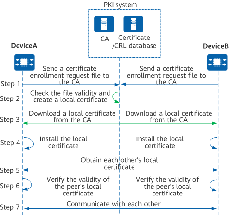
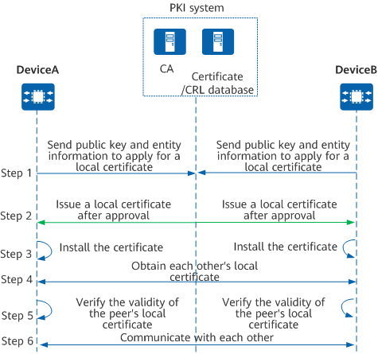

On a PKI network, a PKI entity applies for a local certificate from the CA and the applicant device authenticates the certificate. The processes for offline and online certificate application are different, as described in the following sections.

A PKI entity sends a certificate enrollment request file to the CA in out-of-band mode (for example, by disk or email), requesting the CA to create a certificate.
The CA checks the validity of the certificate enrollment request file. If the file is valid, the CA creates a certificate based on this file.
The PKI entity obtains the local certificate in out-of-band mode (for example, by disk or email), and downloads the obtained local certificate.
The PKI entity installs the local certificate to the device memory.
When PKI entities communicate with one another, they must obtain each other's local certificate and CA certificate. (In IPsec scenarios, a PKI entity sends its local certificate to the peer and does not need to install the peer's local certificate.)
The PKI entity uses CRL or OCSP to check whether the peer's local certificate is valid.
The PKI entity uses the public key in the peer's local certificate for encrypted communication only after confirming that the peer's local certificate is valid.

A PKI entity sends a certificate enrollment request (including the public key in the RSA key pair and the PKI entity information) to the CA.
Signature: The PKI entity uses the CA certificate's public key to encrypt the certificate enrollment request, and uses the private key corresponding to its external identity certificate (local certificate issued by another CA) for digital signature.
Message authentication code: The PKI entity uses the CA certificate's public key to encrypt the certificate enrollment request, and the request must contain the message authentication code's reference value and secret value (the values must be the same as those of the CA).
Signature: The CA uses its own private key to decrypt the certificate enrollment request, uses the public key of the PKI entity's external identity certificate to decrypt the digital signature, and verifies the digital fingerprint. When the fingerprint is the same as that of the CA, the CA verifies the PKI entity's identity information, accepting the application and issuing a local certificate to the PKI entity. The CA uses the public key of the PKI entity's external identity certificate to encrypt the local certificate, uses its own private key to digitally sign the local certificate, and sends the local certificate to the PKI entity. At the same time, the CA also sends the local certificate to the certificate/CRL database.
Message authentication code: The CA uses its own private key to decrypt the certificate enrollment request, and verifies the reference value and secret value of the message authentication code. When the reference value and secret value are the same as those of the CA, the CA verifies the PKI entity's identity information, accepting the application and issuing a local certificate to the PKI entity. The CA then uses the PKI entity's public key to encrypt the local certificate, and issues the local certificate to the PKI entity. At the same time, the CA also sends the local certificate to the certificate/CRL database.
Signature: The PKI entity uses the private key corresponding to its external identity certificate to decrypt the local certificate, uses the CA certificate's public key to decrypt the digital signature, and verifies the digital fingerprint. If the digital fingerprint is the same as its local one, the PKI entity accepts and installs the local certificate to the device memory.
Message authentication code: The PKI entity uses its own private key to decrypt the certificate, and verifies the reference value and secret value of the message authentication code. If the reference value and secret value are the same as its local ones, the PKI entity accepts and installs the local certificate to the device memory.
When PKI entities communicate with one another, they must obtain each other's local certificate and CA certificate. (In IPsec scenarios, a PKI entity sends its local certificate to the peer and does not need to install the peer's local certificate.)
The PKI entity uses CRL or OCSP to check whether the peer's local certificate is valid.
The PKI entity uses the public key in the peer's local certificate for encrypted communication only after confirming that the peer's local certificate is valid.
If an RA is available in a PKI system, the PKI entities also need to download the RA's certificate. The RA verifies local certificate enrollment requests from PKI entities, and forwards the requests to the CA after verifications are passed.